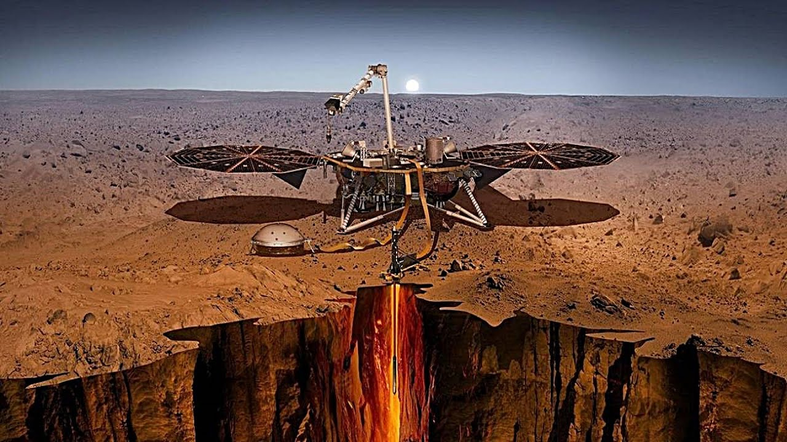

Foi detectado pela primeira vez um possível terremoto em Marte pela Sonda InSight
por Camila Cardoso, 03/05/2019

Fonte Google (2019)
A Sonda InSight foi enviada à Marte, em 2018, com o objetivo de investigar o interior de Marte. Desde que chegou, essa foi a primeira vez, no dia 6 de abril de 2019, que o robô detectou evidências de abalos sísmicos.
Apesar da suspeita, ainda não houve nenhuma confirmação por parte dos cientistas. Os dados ainda estão sendo examinados para tentar entender a causa exata desse pequeno tremor.
Em um comunicado da Nasa, foi comparado a superfície da Terra com a de Marte. Eles disseram que a superfície marciana é super silenciosa, diferente da superfície da Terra. Os abalos sísmicos que ocorrem aqui acontecem devido as placas tectônicas, mas, em Marte, os problemas não são as camadas de rochas e, sim, as baixas temperaturas que resfriam e contraem a superfície gerando um estresse entre as rochas que, por consequência, liberam energia em forma de tremor.
No vídeo liberado pela Nasa, dá para escutar os sons captados pelo sismógrafo e ele pode ser encontrado neste link.
Fontes:
https://brasil.elpais.com/brasil/2019/04/24/ciencia/1556104206_574077.html
https://super.abril.com.br/ciencia/sonda-da-nasa-detecta-primeiro-terremoto-em-marte/